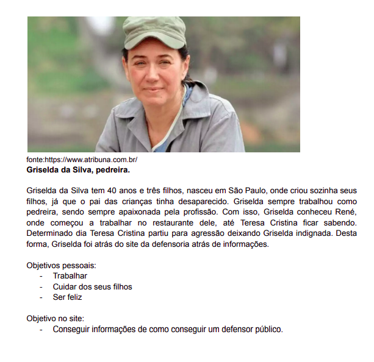

Personas
1. Introdução
Segundo, Cooper et al., 2014; Pruitt e Adlin, 2006; Cooper, 1999, as personas são como um tipo de personagem fictício. São consideradas assim porque são criadas com o intuito de representar um usuário, seja ele um que utiliza o sistema ou não. Como desempenha um papel fundamental, deve ser criada de modo que seja o mais fiel possível à uma pessoa, devendo levar em conta que devem ser criadas no mínimo 3 e no máximo 12, mínimo 3 porque se for menos pode acabar faltando informação e máximo 12 para não confundir a cabeça da equipe de design.
2. Metodologia
Para criação das personas foi levado em conta os critérios descritos por Courage e Baxter(2005): - Identidade: definir nome, sobrenome, idade, dados demográficos e foto; - Status: definir se é primária, secundária, stakeholder ou antiusuário; - Objetivos: definir os objetivos dessa persona; - Habilidades: definir as habilidades dessa persona; - Tarefas: definir tarefas que essa persona realiza; - Relacionamentos: definir o relacionamento dessa persona com as outras; - Requisitos: definir de que essa persona precisa; - Expectativas: definir o que essa persona está esperando do sistema;
3. Personas
-
3.1. Marcos Sousa
-
3.2. Griselda da Silva

-
3.3. Carla Alves
-
3.4. Carlos Eduardo
3. Referências Bibliográficas
- SIMONE DINIZ JUNQUEIRO BARBOSA, BRUNO SANTANA DA SILVA, Interação Humano-Computador, 1a . Edição, Editora Campus, 2010
Versionamento
| Data | Versão | Descrição | Autores |
|---|---|---|---|
| 19/03/2021 | 1.0 | Criação da estrutura principal do documento | Lorrany Oliveira e Tiago Samuel Rodrigues |
| 19/03/2021 | 1.1 | Revisa e ajusta algumas formatações do documento | Lucas Boaventura |
| 07/05/2021 | 1.2 | Revisa e padroniza documento | Tiago Samuel Rodrigues |